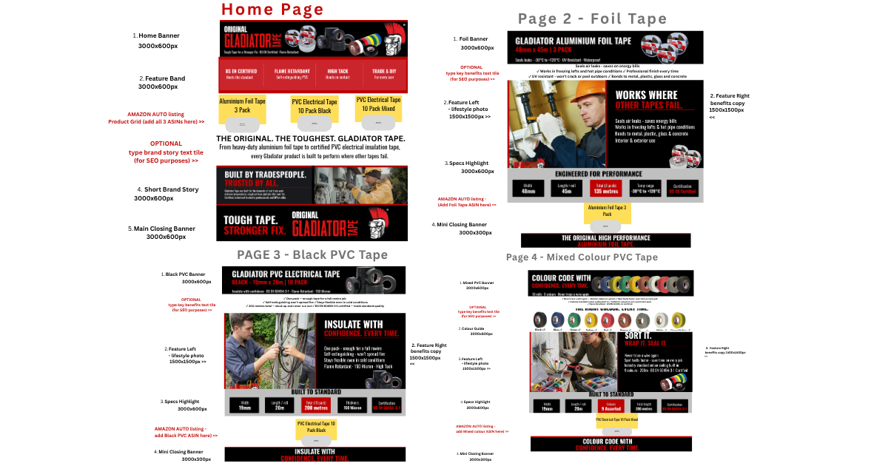
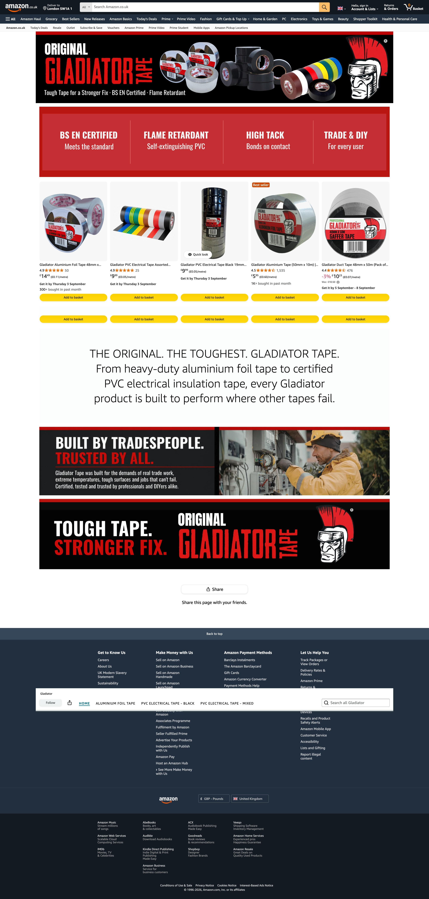

Systems, workflows, and operations I've built — from Amazon ops to automation.
Designed and built a full Amazon storefront for a UK tape and adhesives brand, from design plan to live build — banners, copy, product pages, and category layouts, everything created from scratch.


Built and maintained an end-to-end automation workflow for B2B practitioner outreach — from lead capture to CRM sync.
Managed product research, supplier outreach, and account optimization for a seven-figure Amazon wholesale store.
Set up automation workflows in Make for a current eCommerce clients, working alongside an AI assistant for build, QA, and debugging.